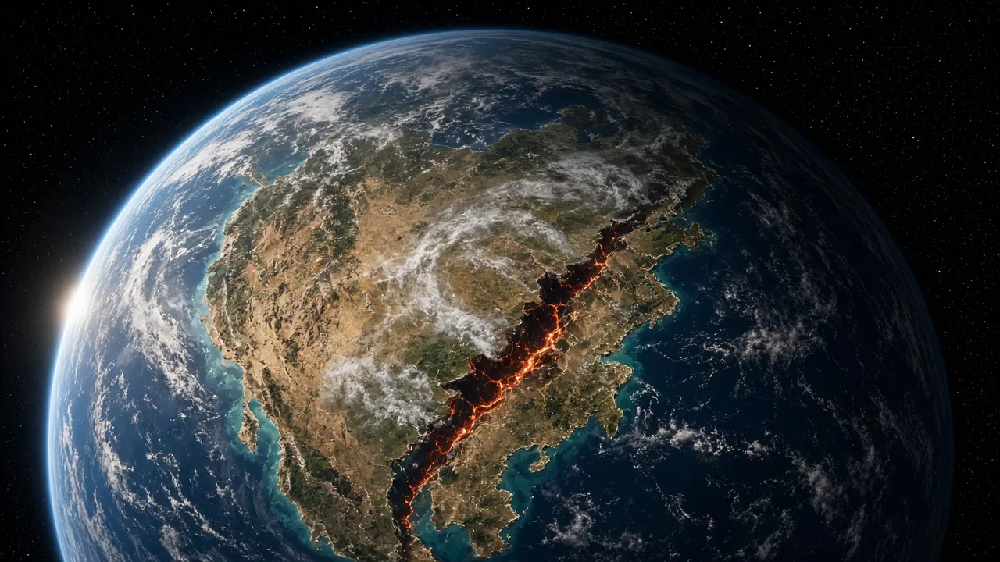

יבשות בתנועה
טקטוניקת הלוחות: איך פנגיאה התפרקה, איך הודו הרימה את ההימלאיה, ואיך אפריקה נבקעת היום.
TODO machine-draft translation: English for review.

Artist’s interpretation — SI render made for Before Saving Planets; science per cited sources (not a photo).

NASA / Apollo 17 crew, public domain. File page

Earth’s skin is broken into plates
Earth’s outer shell (lithosphere) is broken into about a dozen large plates that move a few centimeters a year — about as fast as fingernails grow.
Pangaea breaks apart
The supercontinent Pangaea began breaking up about 200 million years ago. The South Atlantic opened in the Early Cretaceous, separating Africa and South America — which is why their coastlines fit like puzzle pieces.
India meets Asia: the Himalayas
India drifted north and collided with Asia about 40–50 million years ago. The crash pushed up the Himalayas and the Tibetan Plateau. Mount Everest sits on the Nepal–China (Tibet) border, and the range is still rising.
Africa is splitting now
The East African Rift is an active rift where the African Plate is slowly pulling apart into the Nubian and Somali plates. In Ethiopia’s Afar region, the Red Sea, Gulf of Aden and rift meet; one day a new ocean may form there.
Sources
Keep digging: Oceans: Earth’s Blue EngineSeas: Where Oceans Meet LandThe Dead Sea: Lowest Place on Land · Deep Time